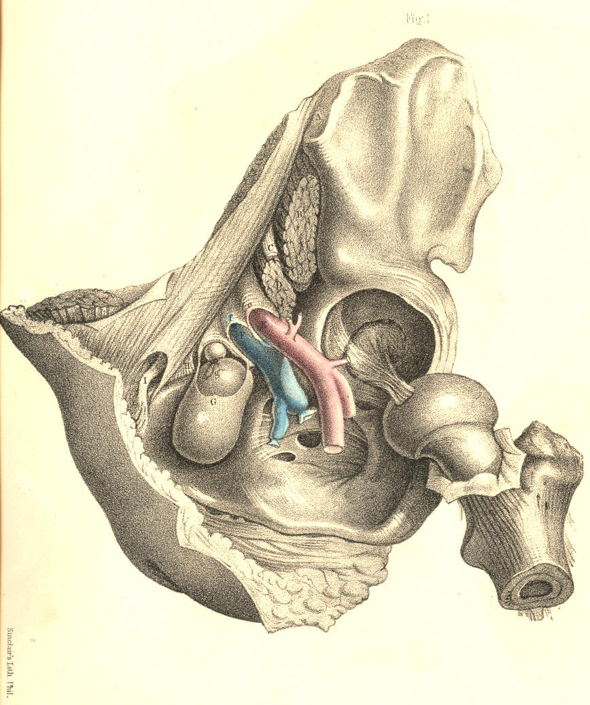
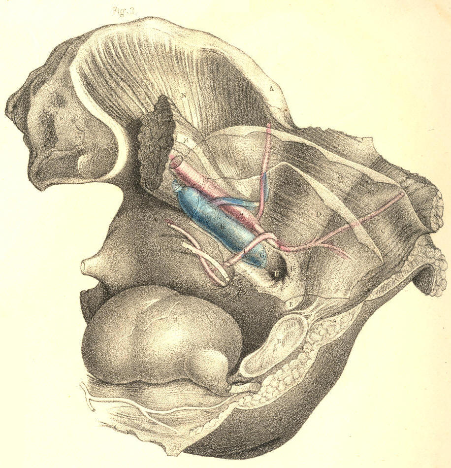
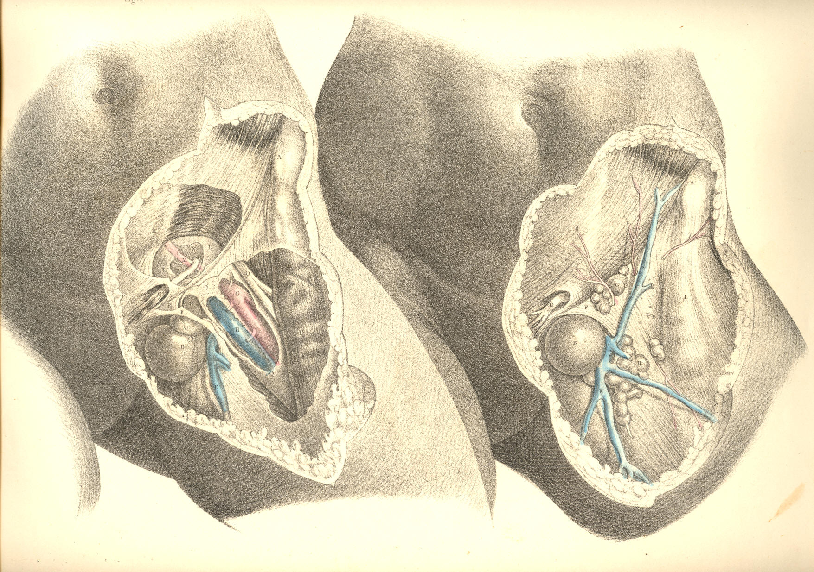

SURGICAL ANATOMY by JOSEPH MACLISE
COMMENTARY ON PLATES 43 & 44.
THE DISSECTION OF FEMORAL HERNIA, AND THE SEAT OF STRICTURE.
Whilst all forms of inguinal herniae escape from the abdomen at places
situated immediately above Poupart's ligament, the femoral hernia, G,
Fig. 1, Plate 43, is found to pass from the abdomen immediately below
this structure, A I, and between it and the horizontal branch of the
pubic bone. The inguinal canal and external abdominal ring are parts
concerned in the passage of inguinal herniae, whether oblique or direct,
external or internal; whilst the femoral canal and saphenous opening are
the parts through which the femoral hernia passes. Both these orders of
parts, and of the herniae connected with them respectively, are,
however, in reality situated so closely to each other in the
inguino-femoral region, that, in order to understand either, we should,
examine both at the same time comparatively.
The structure which is named Poupart's ligament in connexion with
inguinal herniae, is named the femoral or crural arch (Gimbernat) in
relation to femoral hernia. The simple line, therefore, described by
this ligament explains the narrow interval which separates both
varieties of the complaint. So small is the line of separation described
between these herniae by the ligament, that this (so to express the
idea) stands in the character of an arch, which, at the same time,
supports an aqueduct (the inguinal canal) and spans a road (the femoral
sheath.) The femoral arch, A I, Fig. 1, Plate 43, extends between the
anterior superior iliac spinous process and the pubic spine. It connects
the aponeurosis of the external oblique muscle, D d, Fig. 2, Plate 44,
with F, the fascia lata. Immediately above and below its pubic extremity
appear the external ring and the saphenous opening. On cutting through
the falciform process, F, Fig. 1, Plate 44, we find Gimbernat's
ligament, R, a structure well known in connexion with femoral hernia.
Gimbernat's ligament consists of tendinous fibres which connect the
inner end of the femoral arch with the pectineal ridge of the os pubis.
The shape of the ligament is acutely triangular, corresponding to the
form of the space which it occupies. Its apex is internal, and close to
the pubic spine; its base is external, sharp and concave, and in
apposition with the sheath of the femoral vessels. It measures an inch,
more or less, in width, and it is broader in the male than in the
female--a fact which is said to account for the greater frequency of
femoral hernia in the latter sex than in the former, (Monro.) Its
strength and density also vary in different individuals. It is covered
anteriorly by, P, Fig. 1, Plate 44, the upper cornu of the falciform
process; and behind, it is in connexion with, k, the conjoined tendon.
This tendon is inserted with the ligament into the pectineal ridge. The
falciform process also blends with the ligament; and thus it is that the
femoral hernia, when constricted by either of these three structures,
may well be supposed to suffer pressure from the three together.
A second or deep femoral arch is occasionally met with. This structure
consists of tendinous fibres, lying deeper than, but parallel with,
those of the superficial arch. The deep arch spans the femoral sheath
more closely than the superficial arch, and occupies the interval left
between the latter and the sheath of the vessels. When the deep arch
exists, its inner end blends with the conjoined tendon and Gimbernat's
ligament, and with these may also constrict the femoral hernia.
The sheath, e f, of the
femoral vessels, E F, Fig. 1, Plate 43, passes
from beneath the middle of the femoral arch. In this situation, the
iliac part of the fascia lata, F G, Fig. 2, Plate 44, covers the sheath.
Its inner side is bounded by Gimbernat's ligament, R, Fig. 1, Plate 44,
and F, the falciform edge of the saphenous opening. On its outer side
are situated the anterior crural nerve, and the femoral parts of the
psoas and iliacus muscles. Of the three compartments into which the
sheath is divided by two septa in its interior, the external one, E,
Fig. 1, Plate 43, is occupied by the femoral artery; the middle one, F,
by the femoral vein; whilst the inner one, G, gives passage to the
femoral lymphatic vessels; and occasionally, also, a lymphatic body is
found in it. The inner compartment, G, is the femoral canal, and through
it the femoral hernia descends from the abdomen to the upper and
forepart of the thigh. As the canal is the innermost of the three spaces
inclosed by the sheath, it is that which lies in the immediate
neighbourhood of the saphenous opening, Gimbernat's ligament, and the
conjoined tendon, and between these structures and the femoral vein.
The sheath of the femoral vessels, like that of the spermatic cord, is
infundibuliform. Both are broader at their abdominal ends than
elsewhere. The femoral sheath being broader above than below, whilst the
vessels are of a uniform diameter, presents, as it were, a surplus space
to receive a hernia into its upper end. This space is the femoral or
crural canal. Its abdominal entrance is the femoral or crural ring.
The femoral ring, H, Fig. 2, Plate 43, is, in the natural state of the
parts, closed over by the peritonaeum, in the same manner as this
membrane shuts the internal inguinal ring. There is, however,
corresponding to each ring, a depression in the peritonaeal covering;
and here it is that the bowel first forces the membrane and forms of
this part its sac.
On removing the peritonaeum from the inguinal wall on the inner side of
the iliac vessels, K L, we find the horizontal branch of the os pubis,
and the parts connected with it above and below, to be still covered by
what is called the subserous tissue. The femoral ring is not as yet
discernible on the inner side of the iliac vein, K; for the subserous
tissue being stretched across this aperture masks it. The portion of the
tissue which closes the ring is named the crural septum, (Cloquet.) When
we remove this part, we open the femoral ring leading to the
corresponding canal. The ring is the point of union between the fibrous
membrane of the canal and the general fibrous membrane which lines the
abdominal walls external to the peritonaeum. This account of the
continuity between the canal and abdominal fibrous membrane equally
applies to the connexion existing between the general sheath of the
vessels and the abdominal membrane. The difference exists in the fact,
that the two outer compartments of the sheath are occupied by the
vessels, whilst the inner one is vacant. The neck or inlet of the
hernial sac, H, Fig. 2, Plate 43, exactly represents the natural form of
the crural ring, as formed in the fibrous membrane external to, or (as
seen in this view) beneath the peritonaeum.
The femoral ring, H, is girt round on all sides by a dense fibrous
circle, the upper arc being formed by the two femoral arches; the outer
arc is represented by the septum of the femoral sheath, which separates
the femoral vein from the canal; the inner arc is formed by the united
dense fibrous bands of the conjoined tendon and Gimbernat's ligament;
and the inferior arc is formed by the pelvic fascia where this passes
over the pubic bone to unite with the under part of the femoral canal
and sheath. The ring thus bound by dense resisting fibrous structure, is
rendered sharp on its pubic and upper sides by the salient edges of the
conjoined tendon and Gimbernat's ligament, &c. From the femoral
ring the
canal extends down the thigh for an inch and a-half or two inches in a
tapering form, supported by the pectineus muscle, and covered by the
iliac part of the fascia lata. It lies side by side with the saphenous
opening, but does not communicate with this place. On a level with the
lower cornu of the saphenous opening, the walls of the canal become
closely applied to the femoral vessels, and here it may be said to
terminate.
The bloodvessels which pass in the neighbourhood of the femoral canal
are, 1st. the femoral vein, F, Fig. 1, Plate 43, which enclosed in its
proper sheath lies parallel with and close to the outer side of the
passage. 2nd, Within the inguinal canal above are the spermatic vessels,
resting on the upper surface of the femoral arch, which alone separates
them from the upper part or entrance of the femoral canal. 3rd, The
epigastric artery, F, Fig. 2, Plate 43, which passes close to the outer
and upper border of, H, the femoral ring. This vessel occasionally gives
off the obturator artery, which, when thus derived, will be found to
pass towards the obturator foramen, in close connexion with the ring;
that is, either descending by its outer border, G*, between this point
and the iliac vein, K; or arching the ring, G, so as to pass down close
to its inner or pubic border. In some instances, the vessel crosses the
ring; a vein generally accompanies the artery. These peculiarities in
the origin and course of the obturator artery, especially that of
passing on the pubic side of the ring, behind Gimbernat's ligament and
the conjoined tendon, E H, are fortunately very rare.
As the course to be taken by the bowel, when a femoral hernia is being
formed, is through the crural ring and canal, the structures which have
just now been enumerated as bounding this passage, will, of course, hold
the like relation to the hernia. The manner in which a femoral hernia is
formed, and the way in which it becomes invested in its descent, may be
briefly stated thus: The bowel first dilates the peritonaeum opposite
the femoral ring, H, Fig. 2, Plate 43, and pushes this membrane before
it into the canal. This covering is the hernial sac. The crural septum
has, at the same time, entered the canal as a second investment of the
bowel. The hernia is now enclosed by the sheath, G, Fig. 1, Plate 43, of
the canal itself. [Footnote 1] Its further progress through the
saphenous opening, B F, Fig. 1, Plate 44, must be made either by
rupturing the weak inner wall of the canal, or by dilating this part; in
one or other of these modes, the herniary sac emerges from the canal
through the saphenous opening. In general, it dilates the side of the
canal, and this becomes the fascia propria, B G. If it have ruptured the
canal, the hernial sac appears devoid of this covering. In either case,
the hernia, increasing in size, turns up over the margin of F, the
falciform process, [Footnote 2] and ultimately rests upon the iliac
fascia lata, below the pubic third of Poupart's ligament. Sometimes the
hernia rests upon this ligament, and simulates, to all outward
appearance, an oblique inguinal hernia. In this course, the femoral
hernia will have its three parts--neck, body, and fundus--forming nearly
right angles with each other: its neck [Footnote 3] descends the crural
canal, its body is directed to the pubis through the saphenous opening,
and its fundus is turned upwards to the femoral arch.
[Footnote 1: The sheath of the canal, together with the crural septum,
constitutes the "fascia propria" of the hernia (Sir Astley Cooper). Mr.
Lawrence denies the existence of the crural septum.]
[Footnote 2: The "upper cornu of the saphenous opening," the
"falciform
process" (Burns), and the "femoral ligament" (Hey), are names applied to
the same part. With what difficulty and perplexity does this
impenetrable fog of surgical nomenclature beset the progress of the
learner!]
[Footnote 3: The neck of the sac at the femoral ring lies very deep, in
the undissected state of the parts (Lawrence).]
The crural hernia is much more liable to suffer constriction than the
inguinal hernia. The peculiar sinuous course which the former takes from
its point of origin, at the crural ring, to its place on Poupart's
ligament, and the unyielding fibrous structures which form the canal
through which it passes, fully account for the more frequent occurrence
of this casualty. The neck of the sac may, indeed, be supposed always to
suffer more or less constriction at the crural ring. The part which
occupies the canal is also very much compressed; and again, where the
hernia turns over the falciform process, this structure likewise must
cause considerable compression on the bowel in the sac. [Footnote] This
hernia suffers stricture of the passive kind always; for the dense
fibrous bands in its neighbourhood compress it rather by withstanding
the force of the herniary mass than by reacting upon it. There are no
muscular fibres crossing the course of this hernia; neither are the
parts which constrict it likely to change their original position,
however long it may exist. In the inguinal hernia, the weight of the
mass may in process of time widen the canal by gravitating; but the
crural hernia, resting on the pubic bone, cannot be supposed to dilate
the crural ring, however greatly the protrusion may increase in size and
weight.
[Footnote: Sir A. Cooper (Crural Hernia) is of opinion that the
stricture is generally in the neck of the sheath. Mr. Lawrence remarks,
"My own observations of the subject have led me to refer the cause of
stricture to the thin posterior border (Gimbernat's ligament) of the
crural arch, at the part where it is connected to the falciform
process." (Op. cit.) This statement agrees also with the experience of
Hey, (Practical Obs.)]
DESCRIPTION OF THE FIGURES OF PLATES 43 & 44.
PLATE 43.
FIGURE 1.
A. Anterior superior iliac spine.
B. Iliacus muscle, cut.
C. Anterior crural nerve, cut.
D. Psoas muscle, cut.
E. Femoral artery enclosed in e,
its compartment of the femoral sheath.
F. Femoral vein in its compartment, f,
of the femoral sheath.
G. The fascia propria of the hernia; g,
the contained sac.
H. Gimbernat's ligament.
I. Round ligament of the uterus.

PLATE 43.--FIGURE 1.
FIGURE 2.
A. Anterior superior iliac spine.
B. Symphysis pubis.
C. Rectus abdominis muscle.
D. Peritonaeum.
E. Conjoined tendon.
F. Epigastric artery.
G* G. Positions of the obturator artery when given off from the
epigastric.
H. Neck of the sac of the crural hernia.
I. Round ligament of the uterus.
K. External iliac vein.
L. External iliac artery.
M. Tendon of the psoas parvus muscle, resting on the psoas magnus.
N. Iliacus muscle.
O. Transversalis fascia.

PLATE 43.--FIGURE 2.
PLATE 44.
FIGURE 1.
A. Anterior superior iliac spine.
B. The crural hernia.
C. Round ligament of the uterus.
D. External oblique muscle; d,
Fig. 2, its aponeurosis.
E. Saphaena vein.
F. Falciform process of the saphenous opening.
G. Femoral artery in its sheath.
H. Femoral vein in its sheath.
I. Sartorius muscle.
K. Internal oblique muscle; k,
conjoined tendon.
L L. Transversalis fascia.
M. Epigastric artery.
N. Peritonaeum.
O. Anterior crural nerve.
P. The hernia within the crural canal.
Q Q. Femoral sheath.
R. Gimbernat's ligament.
FIGURE 2.
The other letters refer to the same parts as seen in Fig. 1.
G. Glands in the neighbourhood of Poupart's ligament.
H. Glands in the neighbourhood of the saphenous opening.
I. The sartorius muscle seen through its fascia.

PLATE 44.--FIGURE 1, 2.
COMMENTARY ON PLATES 45
& 46